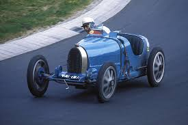
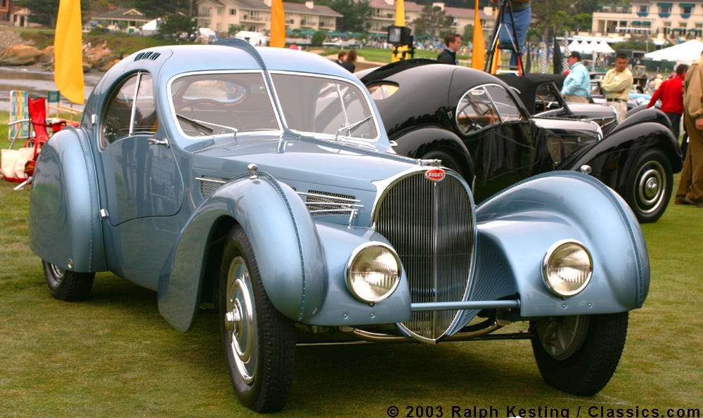
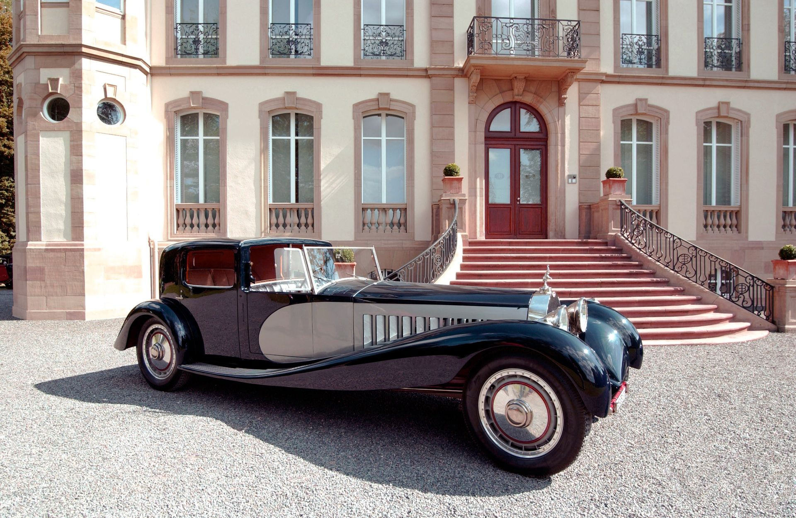
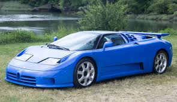
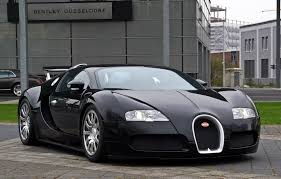
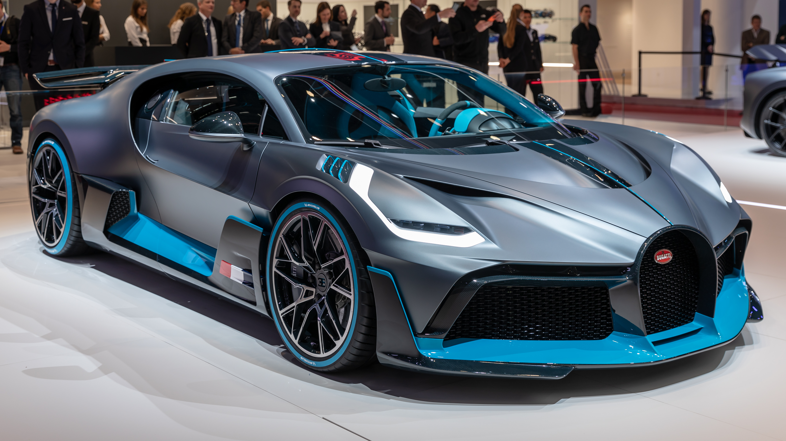
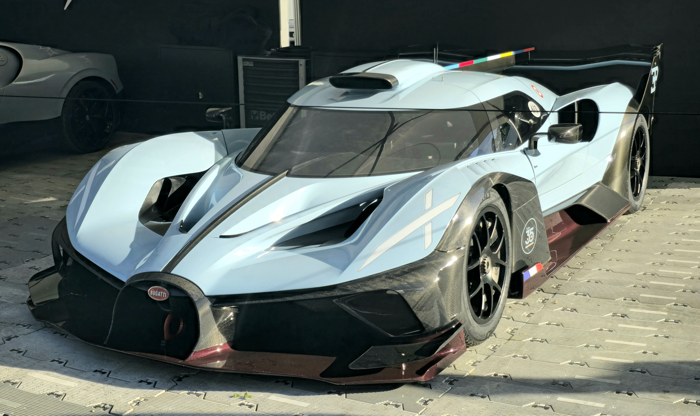
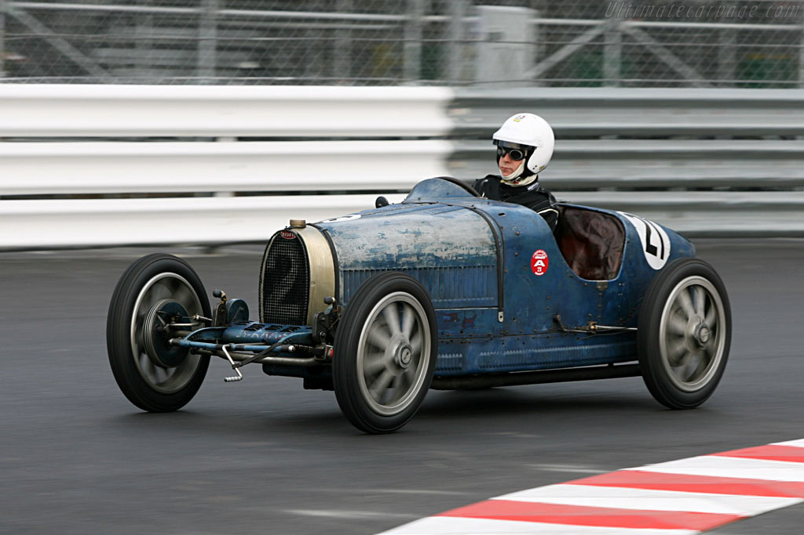
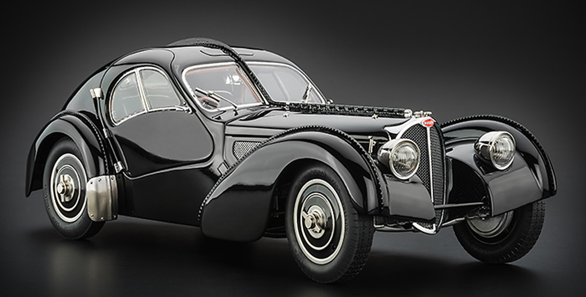
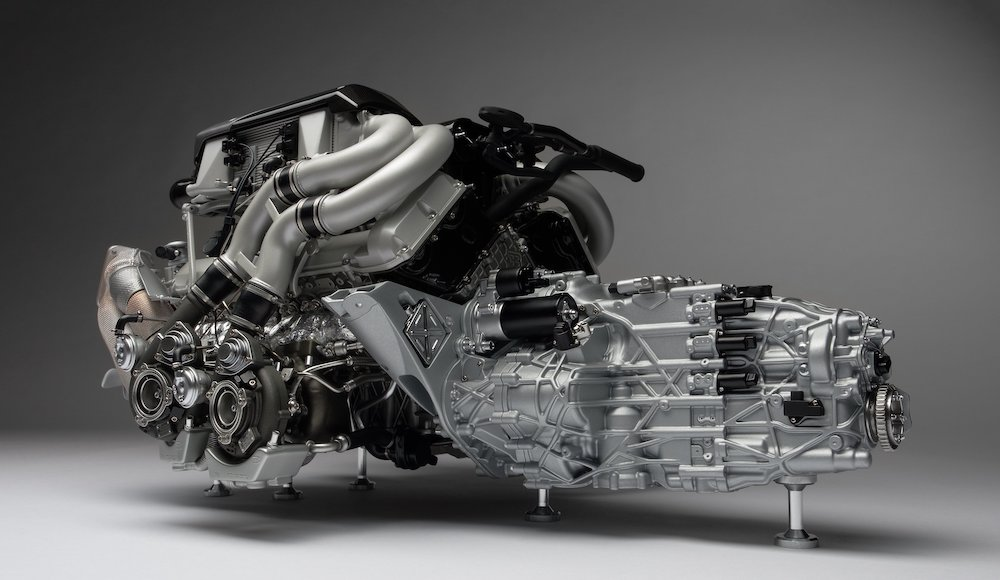

Bugatti
Art, Forme, Technique
Founded: 1909
Country: France
Icon: Veyron, Type 35
300+ mph
Art, Forme, Technique
Bugatti is the ultimate expression of automotive art. Founded in 1909 by Italian-born Ettore Bugatti in Molsheim, Alsace (then Germany, now France), the company combined exquisite engineering with breathtaking beauty.
Ettore was both an engineer and an artist. His cars were mechanically advanced and visually stunning. The Bugatti family motto was "Nothing is too beautiful, nothing is too expensive."
The first great Bugatti was the Type 13 (1910), which won its class at the French Grand Prix. The 1920s brought the Type 35 – the most successful race car of all time, with over 2,000 victories.
The 1930s saw Bugatti's masterpieces: the Type 57 and its variants. The Type 57 Atlantic is one of the most beautiful and valuable cars ever, with only four built. The Type 41 Royale was the ultimate luxury car – only six made, each with a 12.7L engine.
Ettore's son Jean was a brilliant designer, but he died in 1939 while testing a race car. The family never recovered. WWII disrupted production, and Ettore died in 1947. The company struggled and eventually closed in the 1950s.
In the 1980s, Italian entrepreneur Romano Artioli revived Bugatti, building the EB110 in Campogalliano, Italy. It was a 212 mph supercar with a quad-turbo V12. But financial troubles killed it.
Volkswagen acquired Bugatti in 1998 and set an impossible goal: build a 1,000 hp, 250 mph car that was also comfortable and reliable. The Veyron (2005) achieved that and more – it became the fastest production car ever, redefining what was possible.
The Chiron (2016) raised the bar further – 1,500 hp, 260+ mph. The Mistral roadster and Bolide track car push even further. Bugatti has merged with Rimac to create Bugatti Rimac, ensuring its future with hybrid and electric technology.
"Nothing is too beautiful, nothing is too expensive."- Ettore Bugatti

1924-1930
The most successful race car in history. Over 2,000 victories, including five consecutive Targa Florio wins. Beautiful, advanced, and dominant.

1936-1938
The most beautiful car ever? Only 4 built, one of the most valuable cars in the world ($40M+). Riveted dorsal seam, stunning proportions.

1927-1933
The ultimate luxury car. 12.7L straight-8, 21 feet long. Only 6 built. Each with custom coachwork. The car for royalty.

1991-1995
The 1990s revival. Quad-turbo V12, 550 hp, 212 mph. Carbon fiber chassis, gold-plated engine bay. 139 built.

2005-2015
The 1,000 hp car that changed everything. Quad-turbo W16, 253 mph, $1.7M. The ultimate engineering achievement.

2016-present
The Veyron's successor. 1,500 hp, 261 mph (limited), 304 mph Super Sport version. 420 built.

2020
Cornering-focused hypercar. Less weight, more downforce. Only 40 built, $6M each.

2021 (track only)
1,825 hp, 1,240 kg. Theoretical top speed over 310 mph. The ultimate track Bugatti.
The Type 35 is the most successful race car in history. It won over 2,000 races in its career, including five consecutive Targa Florio wins (1925-1929).
The Type 35 was so beautiful that it's in the Museum of Modern Art. It established Bugatti's reputation forever.

The Type 57 Atlantic is one of the most beautiful and valuable cars ever made. Only four were built, and two survive. One sold for over $40 million.
Designed by Jean Bugatti, Ettore's son. The Atlantic had a distinctive dorsal seam running from front to back, inspired by the welded construction of aircraft. The proportions were perfect – long hood, fastback roofline, and elegant curves.
The Atlantic is the holy grail for collectors. Its combination of beauty, rarity, and history is unmatched.

When Volkswagen revived Bugatti, they set an impossible goal: a 1,000 hp, 250 mph car that was also comfortable and reliable. The Veyron exceeded it.
